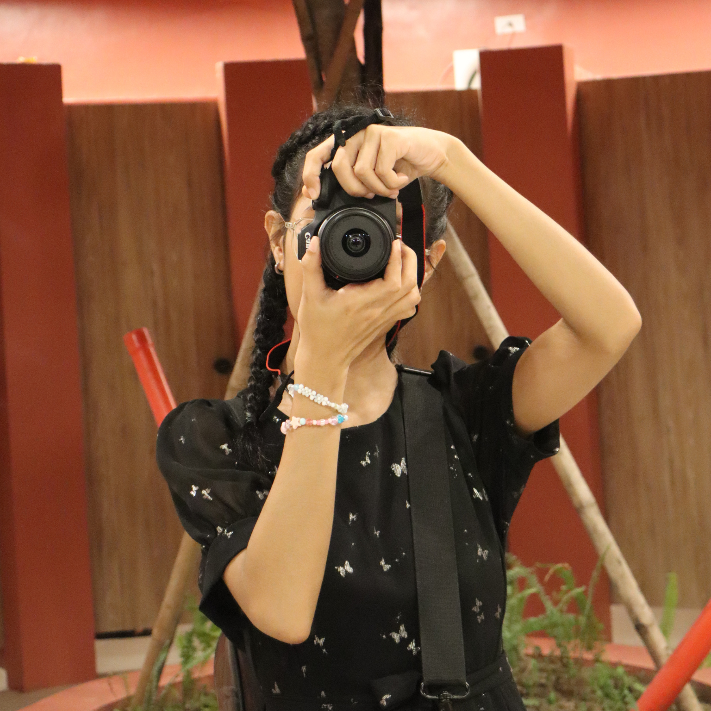

The pandemic led me to discover crocheting as a therapeutic and creative hobby. Crafting intricate patterns with yarn became a soothing escape during challenging times, allowing me to create beautiful and functional pieces.
My journey into sewing began with a desire to design and sew unique clothing for my beloved plushie collection. This newfound passion sparked my creativity and allowed me to bring custom fashion to my adorable stuffed companions.
I've been a fan of K-pop since my Junior Highschool days, and my favorite group, Stray Kids, has consistently captured my heart with their music and performances. Their talent and dedication continue to inspire my deep appreciation for the K-pop genre.
Photooshop has been a versatile and enjoyable tool for me, allowing me to express my creativity through graphic design and various digital art projects.
My love for arts, crafts, and stationery knows no bounds. Engaging in various creative projects brings me immense joy, and collecting stationery items adds a touch of charm to my crafting endeavors.
Though my daily journaling habits have diminished, I still relish the opportunity to curate a collection of exquisite stationery. These items serve as delightful companions for occasional journal entries, enhancing the aesthetics of my personal reflections.


"Diana is a true team member who consistently delivered top-notch work; I'm gladly working with her."
"Your positive attitude and willingness to help others make them a standout team member."
"I've seen Diana take on leadership roles and inspire others to do her best. Her leadership skills are commendable.""
"I appreciate Diana's ability to adapt to challenges and their strong work ethic; they were an essential part of our successful group project."

Stay on this field.
Study Psychology.
Be a photographer.
Improve my sewing and crocheting skills.
If you had asked the 10th-grade version of myself what she wanted to study in college, she would probably have hesitated before saying BSIT. She knew deep down that she also wanted to pursue psychology. But here we are. I am studying my first choice (which is not my first choice on some days), BSIT. Since I was a 10th-grade student, I knew how hard it was to code because we had an IT-related subject. Since I was the only one who owned a computer and had the determination to code, I ended up doing all the hard work of coding for our group. Probably, it is also because I was the leader of our group. After that moment, I realized that the path ahead of me was going to be a long journey.
I became a STEM student in my senior year in hopes of still pursuing psychology. But then I realized that even though I wanted to become a psychologist, I felt I would be more successful in IT. So, I promised that when time permits, I would return to my old dream and pursue it. Until now, I do not know if I chose this path because of what I felt or because everyone in my family is in this field, so I should be too. But do not take this out of context; I love graphic designing, and someday, it is one of the things I want to do as a job. I just have those days where I ask myself, "What if I had chosen psychology or arts, would I be happy?"
Do you still want to be here? I do not think that this question applies to me. I do not have a choice but to stay. I already know that no matter which path I choose, those paths will eventually break me. Instead of trying to run away, I will have to endure this journey. Hear me out. There is nothing wrong with running away, but in my situation, I do not think that is the solution, and I cannot complain because no one pressured me to take this path. Will it be worth it? That is something only the future can tell. Do I think it will be worth it? As long as I can engage in the activities I love, I believe it will be worth it.
Comments
I have no doubt you'll reach your goals, Diana. You're amazing!
Your clarity of purpose and the steps you take to achieve your goals are remarkable.
Your goals are your compass, and your journey is your story.
Your commitment to your goals is truly inspiring.